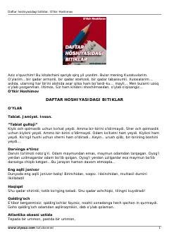

DHInson va jamiyat haqidagi falsafiy mulohazalar va hayotiy aforizmlar to'plami.
O'tkir Hoshimovning qariyb qirq yil davomida yozgan kuzatuvlari, o'ylari va falsafiy xulosalaridan iborat to'plam. Kitobda inson, tabiat va jamiyat haqidagi teran mulohazalar aforizmlar shaklida bayon etilgan.